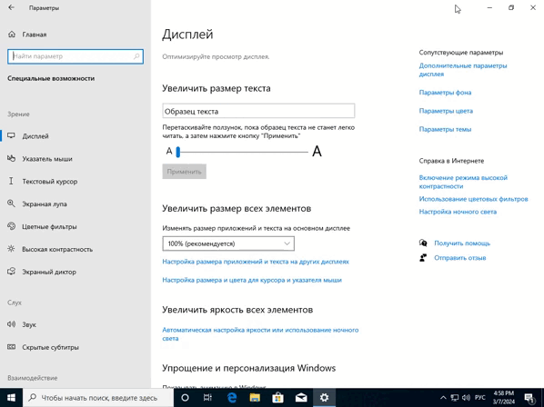
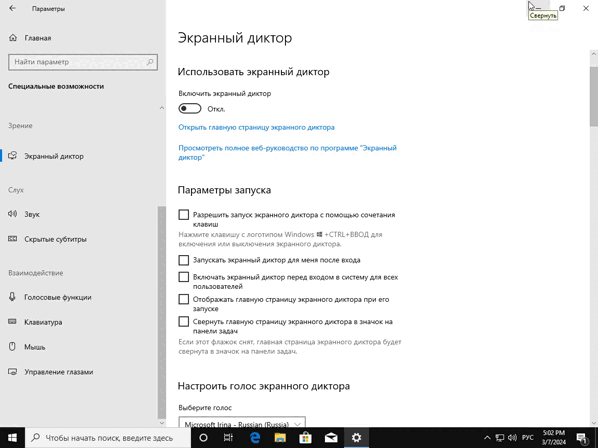
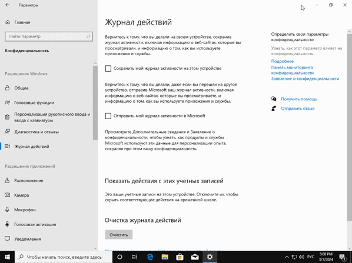

Ручная установка драйверов для видео карты
Первым делом Вам нужно перейти на сайт производителя и скачать драйвера для вашей видеокарты. Переходим по ссылке и выбираем свою модель видео карты:
1. Всё отключаем. Пункт "Отображения рабочего стола" по желанию (не рекомендуется отключать на очень слабых системах).
2. Далее пункт "Указатель мыши", заходим и отключаем "Изменить реакцию сенсорного ввода.

3. "Экранная лупа" - всё "Откл.

4. "Экранный диктор" - всё "Откл.

5. "Клавиатура" - всё отключаем.
1. Первый пункт "Общие", переводим все ползунки в положение "Откл."

"2. Голосовые функции" и "Персонализация рукописного ввода и ввода с клавиатуры" - отключаем всё в обоих пунктах.

"3. Диагностика и отзывы" - делаем как показано на скрине и отключаем флажки вниз по списку. Так же в самом конце пункт "Частота формирования отзывов" выбираем "Никгда"

"4. "Журнал действий" - всё отключаем и "Очищаем журнал действий".

"5. Пункт "Камера" - всё отключаем если не пользуетесь веб-камерой.
"6. "Голосовая активация" - если вы как и я её не используете, всё отключаем.

"7. "Сведения учетной записи" - всё отключаем.

"8. Далее так "контакты, календарь, телефонные звонки, журнал вызовов, электронная почта, задачи, обмен сообщениями, радио, другие устройства, фоновые приложения, диагностика приложения и автоматическое скачивание файлов" - переходим в каждый из пунктов и всё отключаем.

Нажимаем правой кнопкой по всем не активным девайсам и выпадающем контекстном меню нажимаем "Отключить", таким образом мы отключаем драйвер который находится в активном состоянии и нагружает наш компьютер. Только не отключите активные девайсы с зеленой галочкой, иначе звука не будет и всё тоже самое делаем в пункте "Запись".

Нажимаем на кнопку пуск или же на строку поиска Windows и вводим PowerShell. Открываем с помощью "Запуска от администратор" и вписываем этот код и нажимаем Enter: powercfg -duplicatescheme e9a42b02-d5df-448d-aa00-03f14749eb61.

Переходим в пункт "Электропитание" и у вас там появляется пункт "Максимальная производительность", активируем его и перейдем в "Настройка схемы электропитания" и делаем всё как у меня.

Нажимаем на пуск, вводим "Службы" и открываем их, далее будет пример на одной службе (список всех служб, которые нужно отключить ниже).

Служба датчиков. Служба данных датчиков. Сслужба наблюдения за датчиками. Биометрическая служба Windows. Факс. Диспетчер печати (если не пользуетесь принтером). Служба шифрования дисков BitLocker.. Сетевая служба Xbox Live (отключаем если нет приставки Xbox и подписки Game Pass). Служба поддержки Bluetooth (по желанию, я подключаю DualShock и Xbox Gamepad по этому оставил). Общий доступ к интернету ICS (если не раздаете Wi-Fi смело отключаем). Служба лицензий клиента (не пользуетесь магазином MS Store, отключаем, я пользуюсь потому и не отключал). Служба географического положения (с помощью сети определяет где вы находитесь и отправляет эти данные в разные программы включая игры, смело отключаем). Функциональные возможности для подключения пользователей и телеметрия (отключаем если не хотите что бы Windows за вами следила). Служба пульса (Hyper-v) Служба виртуализации удалённых рабочих столов (Hyper-V). Служба синхронизации времени Hyper-V. Служба завершения работы в качестве гостя Hyper-V. Служба обмена данными (Hyper-V). Служба сеансов виртуальных машин Hyper-V.
Отключаем индексацию файлов.После чего у Вас будет долгий процесс отключения данной функции, запасаемся терпением, можно посмотреть видосики. Так проделываем со всеми HDD и SSD. И не спешим перезагружать ПК.

Обеспечиваем наилучшее быстродействие и отключаем все в "Удаленный доступ"

Заходим в пункт "Оптимизация изображения на экране" - отключаем, заходим во вкладку "Облегчение работы с клавиатурой" - отключаем, заходим в под пункты "Настройка управления указателем и Настройка залипания клавиш" - отключаем.